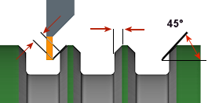

<div id="turning_chamferExtension"><p>面取りを越えて工具を延長する距離です。</p>
<p>面取りエッジを越える追加クリアランスを提供します。以下の左の図に示します。</p>
<table class="tipTable" cellspacing="10">
<tr>
<td><center></center></td>
</tr><tr>
<td><center><p><b>面取り延長 - 面取り幅 - 面取り角度</b></p></center></td>
</tr></table>
</div>